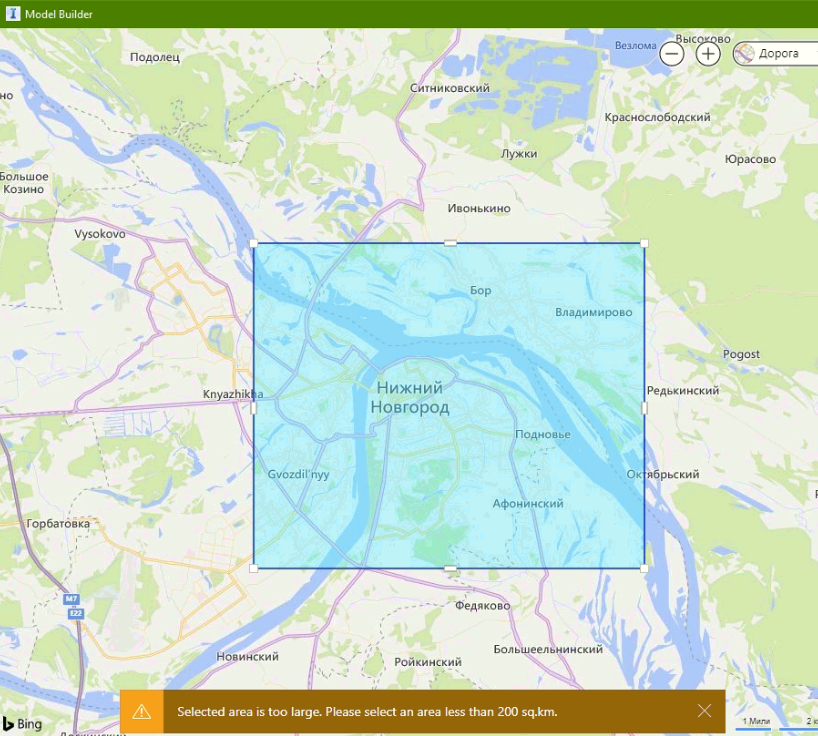
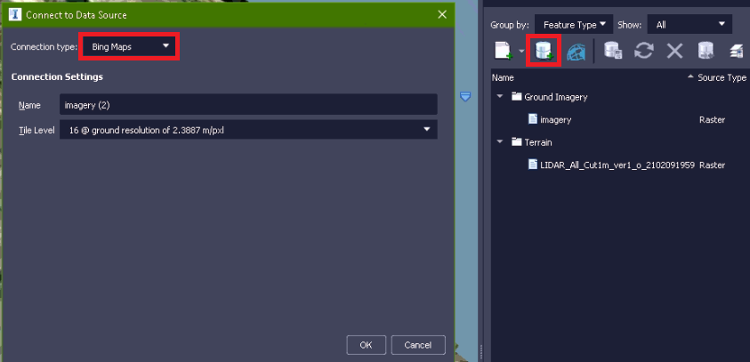
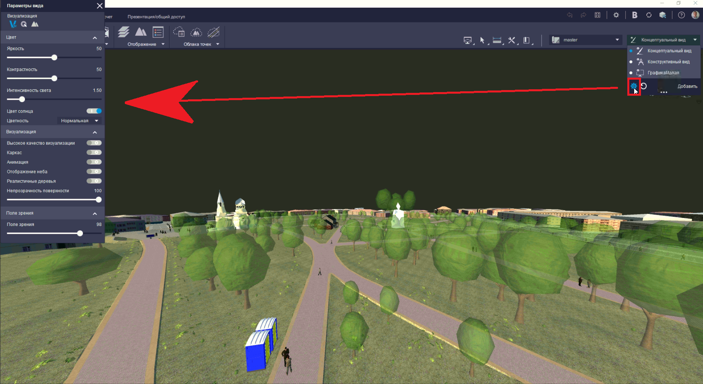
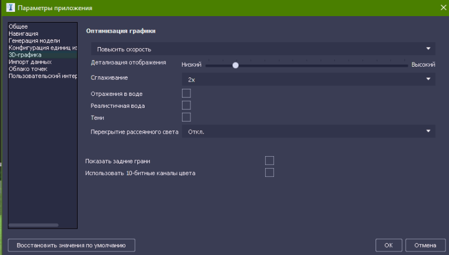
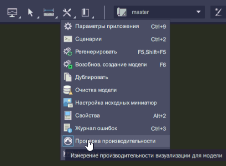

Большие модели в InfraWorks и производительность графики
Дата публикации: 22 февраля 2021 г.
Автор: Егор Гребенюк
В программе Autodesk InfraWorks есть системное ограничение на загрузку не более чем 200 кв. км площади через Конструктор модели, и многие пользователи уверены, что модели больше данной площади в программе обрабатывать нельзя. На самом деле, можно - и в данной небольшой статье мы рассмотрим некоторые операции поподробнее...
Загрузка местности через Конструктор моделей
Для необходимости загрузки местности, размеры которой превышают в плане 200 кв. км необходимо воспользоваться опцией загрузки области через Импорт границ SHP файла. Перед этим, надо данные границы подготовить - это можно сделать через Civil 3D, воспользовавшись стандартным инструментом AutoCAD - "прямоугольный массив". Создадим группу квадратов 14х14 км (196 кв. км суммарно) с взаимным перекрытием порядка 50 метров для последующего схождения поверхностей рельефа на стыках моделей. Далее экспортируем полученные полигоны каждый в отдельный SHP файл, убедившись что:
- а) контур из полилинии имеет тег "Замкнуто: Да"
- б) экспорт идет в формат Esri SHP
- в) на вкладке "Выборка" стоит опция "Выбор вручную" и экспорт в формате "Полигон"
- г) на вкладке "Параметры" стоит галочка "Преобразовать в систему координат LL84"
- д) на вкладке "Параметры" стоит галочка "Рассматривать замкнутые полилинии как полигоны"
После этого в IW выставляем опцию загрузки границ из SHP-файлы и выбираем файлы SHP и PRJ для интересуемого квадрата местности, выставляем название модели и ждем облачной обработки модели. После повторения данных действий для всех моделей производим экспорт из каждой файлов IMX (Рельеф + Дороги), далее создаем пользовательскую модель и импортируем туда все файлы IMX. Profit! Примечание: автор предпочитает грузить рельеф местности иными способами сразу единым файлом (через QGIS) обходя столь длительный процесс подготовки, об этом мы поговорим в отдельной статье.
Загрузка растра Bing на всю местность
Предположим, что мы создали пользовательскую модель способом выше и ходим загрузить поверх неё растровый спутниковый снимок. Стандартный функционал InfraWorks предоставляет такую возможность из панели "Источники данных" запускаем менеджер поделючения к базам данных (см. Рисунок 3 ниже), выбираем пункт "Карты Bing", необходимое разрешение и обновляем данный источник данных для старта загрузки изображения
Примечание:b> карты Bing имеют низкую степень детализации и актуальности на территории РФ, поэтому рекомендуется пользоваться иными картами (мы это также освятим в рамках последующих статей)
Сопутствующая задача, которая может стоять - выгрузить растр местности, повторяющий очертания рельефа в среду Nawisworks - для этого можно воспользоваться экспортом сцены IW в формат FBX с разделением на файлы (оставить только "Поверхность земли"). Сам рельеф предварительно удалять не надо (так как модель регенерируется и в отсутствие рельефа растр примет плоский вид
Производительность графики
На больших сборках рекомендуется настраивать виды (см. Рисунок 4 ниже), а именно убирать прорисовку деревьев, неба, анимации
Похожее окно, управляющее детализацией моделей - это параметры 3D-Графики, доступные из Настроек программы (там, как правило, убирается прорисовка фасадов, отражения в воде и т.д. - см. Рисунок 5)
Индикатором скорости отклика модели на выставленные настройки может служить интересная системная опция "Проверка производительности" (см. Рисунок 6 ниже).Результат выполнения - это справочное диалоговое окно с количество fps для сцены модели.
Примечание: проверка показывает разные результаты в завимости от степени приближения к разным группам элементов модели. Для большей чистоты рекомендуется применять ее в месте наибольшего скопления элементов (максимальный LOD детализации).